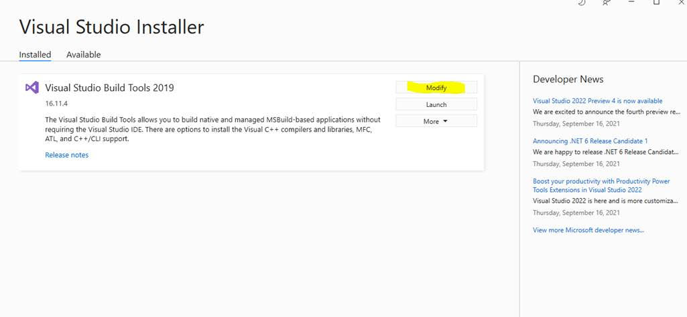
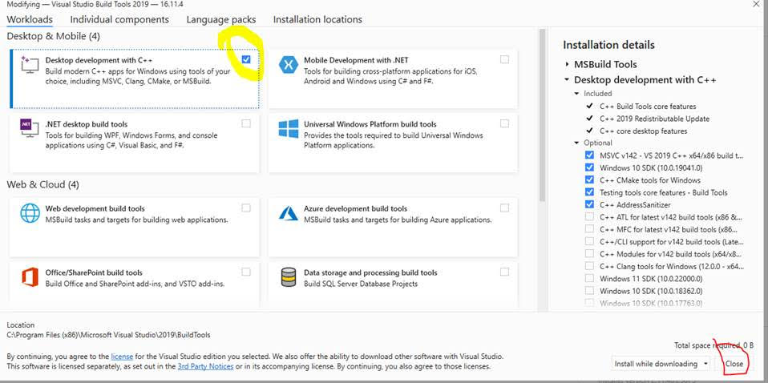
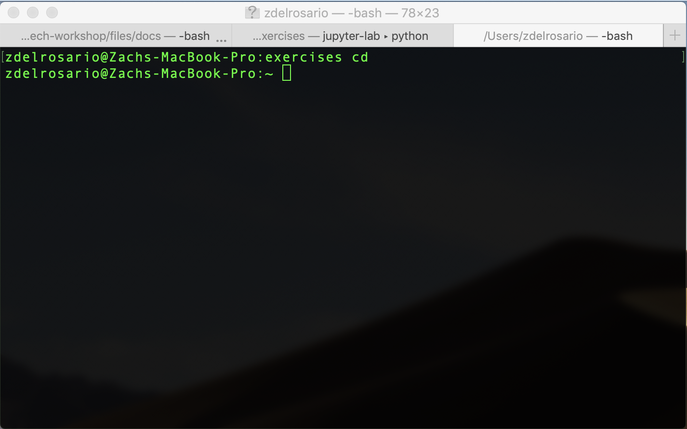
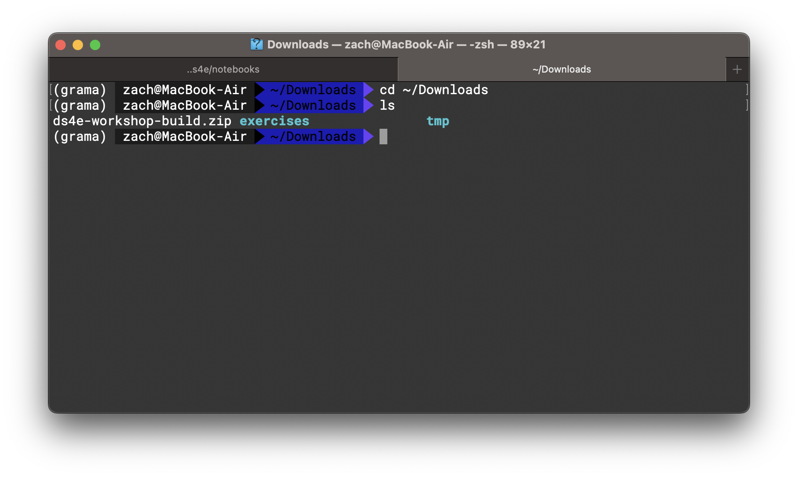
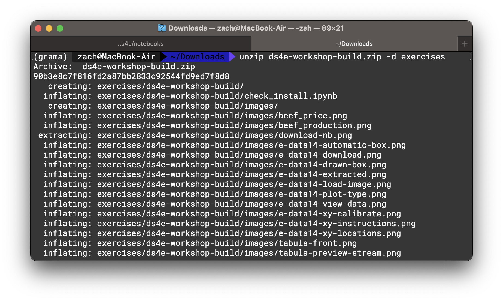
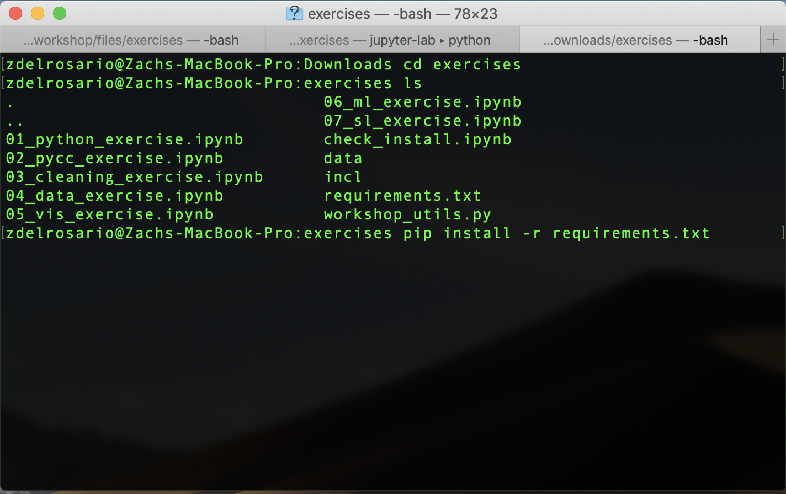
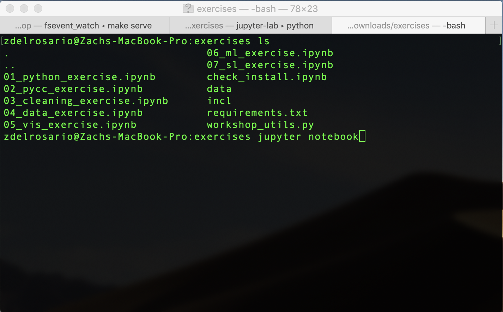

Software Setup#
In short, you’ll need:
Tabula and WebPlotDigitizer (Free software)
Exercise files (Free download)
Python and Jupyter (Recommended: Anaconda, Free software)
If you have any issues with these steps: Please ask for help! We will gladly help you set up your environment.
Tabula#
Tabula is a free program for liberating data from PDF’s. Please follow the previous link and install Tabula before the workshop.
WebPlotDigitizer#
WebPlotDigitizer is a free program for extracting data from images. Please follow the previous link and install WebPlotDigitizer before the workshop.
Exercises Files#
We will work through a number of programming exercises in this workshop. We have consolidated the exercise notebooks and installation files in a single zip; download the following and unzip.
Save this to a stable location on your computer; for instance, your Documents folder.
Python and Jupyter Installation#
We recommend Anaconda
python, which will
provide almost everything you need. Make sure to install python version >= 3.0.
Windows Installation#
If you are on Windows, you may need to install Visual C++ Build
Tools.
You will need to download the file under Tools for Visual Studio 2019 > Build Tools for Visual Studio 2019: This Stack Overflow
post
gives more details; note that Microsoft continually “updates” these links. If
the build tools link above does not work for you, try Googling "microsoft visual c++ build tools": This is (honestly!) the best way to find a working
link.
Make sure to select the build tools
When installing Visual C++, you may see the following interface. If yes, do not click launch; instead, first click Modify.

Within this menu, make sure the C++ build tools are selected, as pictured below.

Once you’ve selected these tools, you can click Install.
Tutorial: Using a Terminal#
Many software tools are most easily accessed through a programmatic interface called a terminal. This section is a brief tutorial on using a terminal. We will make minimal use of the terminal in this workshop, but it will be absolutely essential for setting up your computer for the workshop. Please ask a TA if you have any issues using a terminal.
Opening a terminal#
Mac:
terminal.appis your terminal – you can find this through Spotlight search (Command + Spacebar).Windows: After you have installed Anaconda python, you will have access to
Anaconda prompt– use this as your terminal for the workshop.Linux: If you’re on Linux, you probably already use a terminal regularly. On Ubuntu the shortcut to open a terminal is
Ctrl + Alt + T.
After opening your terminal, you should see a window that looks something like the following.

To use the terminal, you manually type commands, then press Enter to execute.
Changing directory#
When looking for files (Mac: Finder, Windows: Explorer, Linux: e.g. Nautilus),
we use a program to look at directories. Your terminal does something similar
– at any point it is located in a particular directory. The following
screenshot illustrates changing directories (cd) to my Downloads folder,
then listing (ls) the contents of said directory. This is where I placed
the exercises.zip archive for the workshop. (Note: On Windows, you must use
the command dir, rather than ls.)

I unzip the archive exercises.zip from within terminal with the command unzip exercises.zip -d exercises, which results in the following:

Note: On Windows, instead of unzip, you will need to run tar -xf exercises.zip.
I can then cd into the unzipped folder and install the required Python
packages with pip install -r requirements.txt. However, I can only do this
after I’ve installed Anaconda!
Python Module Installation#
Once you have installed python, you will need to install a handful of python
modules to complete all the workshop exercises. Anaconda provides a package
installer called pip; from the command line, you can simply execute the
following commands.
In your terminal, change directory to where you unzipped the exercises, and execute the command:
pip install -r requirements.txt
This will install the requirements for the workshop.

Opening Jupyter Notebooks#
Jupyter notebooks are a particular way of working with Python code. They are
designated with the file extension .ipynb. Unfortunately, you cannot simply
double-click on a Jupyter notebook to open it. Instead, you must launch the
Jupyter client from your terminal. Navigate to the directory where you want
Jupyter to launch (for the workshop, this is where you unzipped the contents of
exercises.zip), and execute the command jupyter notebook.

This will open a webpage in your browser with a file explorer-like view; you can
then click on the notebooks in that directory to open them. Go ahead and open
check_install.ipynb, which you will run at the end of installation to check if
everything is set up correctly.
Final Check of Python Install#
To check that you’ve successfully set up your computer for the workshop, please run the following jupyter notebook.
Test your installation
Download and run
check_install.ipynb.
This is also included in the exercises.zip file above.
Navigate to the folder where you downloaded check_install.ipynb,
execute the command jupyter notebook, open check_install.ipynb,
and click on Cells > Run All. If you can successfully run the
notebook (without errors), then you are ready for the workshop!
(Optional) Binder Option#
If after trying the setup steps above you still cannot get Jupyter working on your computer, you can click the following link to launch the workshop materials in a cloud computing environment. Be warned that you cannot save your work in this cloud notebook!
Click this button to launch MI 101 in Binder: